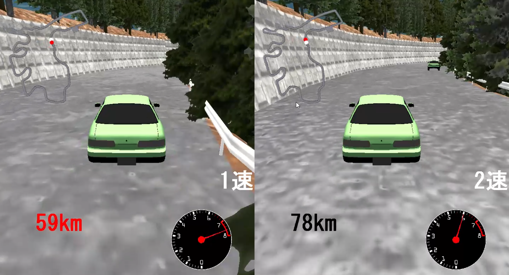
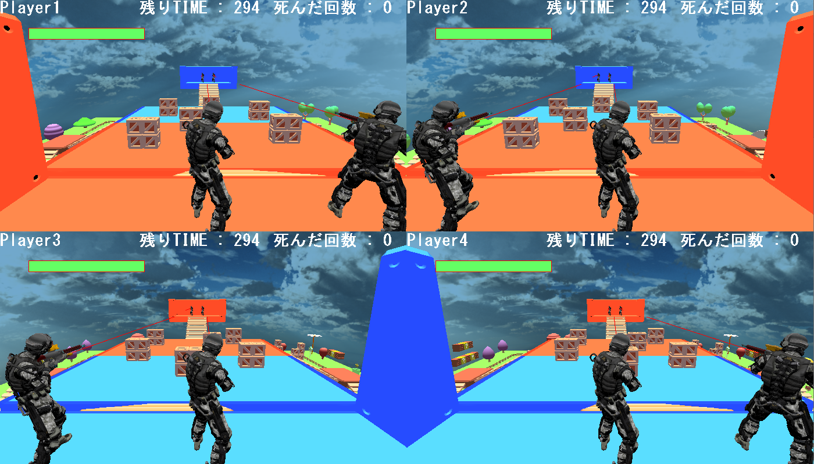
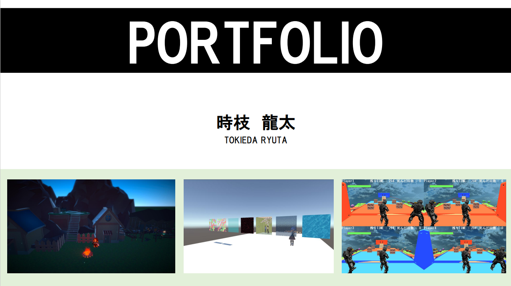

HD2D表現
表現手法がわからない部分については、YouTube や技術記事を参考にしながら検証を重ね、影Shaderや衝突判定、ポストプロセスを実装しています。 また、カメラとプレイヤーの間にオブジェクトが存在する場合に視認性が損なわれる課題に対し、カメラ方向からプレイヤーに重なっているオブジェクトを判定し、半透明化する処理を実装しました。これにより、HD-2D 特有の奥行き感を保ちつつ、プレイヤーの視認性を確保しています。
学生時代はゲームプログラミングに取り組み、レースゲームやTPSの制作を経験しました。 社会人となってからは、AIエンジニアおよびWebエンジニアとして企業に勤務し、業務の一環としてUnreal Engineを用いたシミュレーションの作成にも携わっています。 また、業務の傍ら、帰宅後はHLSLを用いたグラフィック表現の学習や、C#の勉強に継続的に取り組み、技術の幅を継続的に広げています。
名前: 時枝 龍太
年齢: 23歳
居住地: 東京都
X/Twitter: https://x.com/dogu_623
表現手法がわからない部分については、YouTube や技術記事を参考にしながら検証を重ね、影Shaderや衝突判定、ポストプロセスを実装しています。 また、カメラとプレイヤーの間にオブジェクトが存在する場合に視認性が損なわれる課題に対し、カメラ方向からプレイヤーに重なっているオブジェクトを判定し、半透明化する処理を実装しました。これにより、HD-2D 特有の奥行き感を保ちつつ、プレイヤーの視認性を確保しています。
プレイヤーは最大5秒間、過去の行動を巻き戻すことができ、巻き戻した行動は実体を持つ残像として再生され、床スイッチや扉などのギミック解決に利用します。 制作期間は１週間のため見た目は最小限ですが、、3D空間における状態管理・再生処理・責務分離を重視し制作しています。
Unlit Shader、UV スクロール、ディゾルブ Shader などの基礎的な表現から取り組み、現在は Interior Mapping や Toon Shader の自作にも挑戦しています。
ホログラム Shader では、透明表現によって衣服の内部などが透けて見えてしまう問題に対し、Z バッファのみを書き込むパスと通常描画パスを分けた 2Pass 構成を採用し、透明感を保ちつつ、オブジェクトの前後関係が破綻しない、見た目と実用性を両立した Shaderを実現しています。
AI との対話や技術資料を活用しながら、「どうすれば実現できるか」「どこが問題になり得るか」を一つずつ整理し、試行錯誤を重ねながら継続的に学習を進めています。

移動先座標を用いた衝突判定でガードレースのすり抜けを回避。
カメラ演出では普通の追従カメラだと疾走感が欠けたので球面線形補間を用いて臨場感を出しました。衝突判定、カメラ制御に力をいれた作品です。

レースゲームでも使用した画面分割をし、１画面で多人数プレイを実現。
高低差のあるステージで上下の撃ち分けができるようにアニメーションを使わずにフレーム制御で腰曲げをしました。フレーム制御にこだわった作品です。
